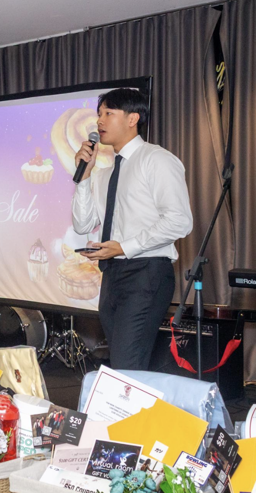

I am a final-year Software Engineering student passionate about building technology that creates positive, real-world impact for communities. I thrive at the intersection of complex technical problem-solving and practical product delivery.
Recently, I completed a 12-week internship as a Software Engineering Intern at Optik Consultancy, where I developed computer vision and 3D depth pipelines. That experience pushed my technical limits, sharpened my engineering discipline, and reinforced my ability to deliver resilient, client-focused software under tight demands.
I operate on a simple principle: with discipline and hard work, any complex problem can be solved. I bring this mindset into everything I do—from engineering software and leading community initiatives to personal fitness and lifelong learning.
Dear Hiring Manager,
I am writing to express my interest in the Industrus Engineering Graduate Program. As a final-year Bachelor of Engineering (Honours) student in Software Engineering at the University of Technology Sydney (UTS), I am drawn to Industrus's use of digital technology to solve complex physical infrastructure problems, such as restoring transport access after natural disasters. My practical experience in spatial data pipeline architecture, computer vision, and team leadership directly aligns with your selection criteria, as detailed below.
Criteria 3.1: A commitment to ethical conduct and the highest standards of professional accountability
Situation/Task: During my engineering internship at Optik Consultancy, I was tasked with processing GoPro video capture feeds to output 3D volumetric damage measurements of road defects for client Damage Control Project Management (DCPM).
• Action: Photogrammetry proved too computationally heavy for a lightweight solution, while basic geometric calculations failed on irregular potholes. Rather than submitting flawed geometric approximations to meet a deadline, I raised the reliability flaw with my team and engineered a lightweight telemetry fusion pipeline combining monocular depth maps, camera angles, and distance metrics with raw GPMF telemetry.
Result: Prioritising scientific accuracy and professional accountability over a quick release ensured municipal reports received precise, audit-ready volumetric measurements, maintaining design integrity and upholding strict engineering standards.
Criteria 3.2: Demonstrated ability to effectively communicate both with other engineers and with stakeholders from different fields
Situation/Task: Across my project work including delivering a custom e-commerce web platform for the Vanuatu Women's HandiCrafts project and leading computer vision workflows at Optik Consultancy, I routinely needed to bridge technical design and non-technical user requirements.
Action: I authored comprehensive technical documentation and API architecture models for engineering peers, while concurrently creating simplified visual user guides and plain-language operational manuals for non-technical clients and international craft artisans.
Result: This dual-communication approach enabled software teams to maintain clean code standards while empowering non-technical stakeholders to independently manage and operate digital systems without ongoing technical intervention.
Criteria 3.3: The ability to engage with a creative, innovative and proactive environment
Situation/Task: At Optik Consultancy, conventional 2D defect detection was insufficient for calculating real-world metric 3D damage profiles required for modern council infrastructure restoration.
Action: I proactively designed an innovative depth estimation pipeline in Python and OpenCV, integrating monocular depth maps with YOLOv8 and SAM2 segmentation models, and fusing them with GPMF telemetry (IMU/GPS data).
Result: This automated workflow replaced manual field inspections by directly generating pixel-precise GeoJSON spatial exports, accelerating defect mapping turnaround times for clients.
Criteria 3.4: Demonstrated ability to use and manage information
Situation/Task: In the Corporate Training Platform architecture project, complex system requirements across microservices, AWS environments, and business goals required structured organisation to ensure clarity for system evaluators.
Action: I systematically modeled and structured the system using C4 architecture diagrams, UML visualisations, and an Architecture Tradeoff Analysis Method (ATAM) framework to categorise functional and non-functional requirements.
Result: Establishing this clear information architecture streamlined design rationale evaluations, allowing team members and reviewers to rapidly query system components, trace data flows, and verify alignment against core business objectives.
Criteria 3.5: The ability to manage your own performance in a professional environment
Situation/Task: Balancing my final-year software engineering degree at UTS alongside my internship at Optik Consultancy, leadership responsibilities as Director of IT at VSA NSW, and shift work at Mooney Mooney club required high-level self-management.
Action: I implemented structured time-blocking routines, set clear weekly milestones, and utilised digital tracking systems to systematically prioritise tasks. I actively solicited performance feedback from senior engineering mentors and independently upskilled in emerging technical frameworks as project scopes evolved.
Result: I consistently delivered high-quality project outcomes early across all roles, maintained a strong academic record, and established a proven framework for personal professional development.
Criteria 3.6: A demonstrated ability to work as part of a team and to show leadership when required
Situation/Task: During my engineering internship at Optik Consultancy, I took the lead on developing the core 3D volumetric damage estimation pipeline, which required coordinating computer vision workflows and spatial data integration across multiple contributors under tight timelines.
Action: I established clear Git protocols, broke down module deliverables across segmentation and telemetry fusion, and led collaborative debugging sessions when technical alignment issues arose.
Result: Under my technical leadership, the team successfully delivered an end-to-end, automated spatial pipeline on schedule. Additionally, I applied these collaborative leadership skills as Director of IT at VSA NSW, leading digital operations and team logistics to help run major community events that raised up to $7,000 for charity.
I welcome the opportunity to discuss how my technical skills in software, spatial data management, and proactive leadership can add value to Industrus Engineering. I can be reached via phone at +61 452 246 309 or email at darrick2003d@gmail.com, and I attach my resume for your review.
Sincerely,
Darrick Dang